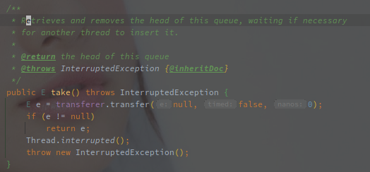

SynchronousQueue
[TOC]
概述
SynchronousQueue 继承于 BlockingQueue，因此也不接受任何 NULL 值。
和其他 BlockingQueue 不同的是，SynchronousQueue 不保存任何元素，甚至无法查看或者遍历其中的元素，只有在有线程删除的时候才可以进行添加元素，反之亦然。
并且 SynchronousQueue 的主要逻辑集中在 Put / Take 这对方法上，调用 offer 添加元素时，如果没有配对的删除操作也不会阻塞。
SynchronousQueue 就是线程的一对一匹配器，生产和消费两种线程互相匹配。
实现原理
SynchronousQueue 包含了公平和非公平两种模式。
公平和非公平模式的含义：
公平是指先来先服务（FIFO），以 TransferQueue 实现，例如先来的消费进程会和先来的生产进程匹配。
非公平则是后来先服务（FIFO），以 TransferStack 实现，按照 Stack 弹出的顺序和另一类型的线程匹配。
Take / Put 方法
以下是 SynchronousQueue#take 的方法实现：

然后是 SynchronousQueue#put 的方法实现：

两个方法的实现都是通过 Transferer#transfer 实现的，主要的区别就是参数，put 的时候会将元素作为第一个参数。
以下就称为 Put 线程和 Take 线程。
TransferQueue
TransferQueue 使用链表的形式保存待匹配的线程节点。
以下为构造函数的实现：

所以初始化的 TransferQueue，就是单个的 NULL 节点（头尾节点相同）。
然后就是 TransferQueue#transfer 方法的实现，主要关注以下几个点：
- 如何阻塞/保存待匹配的线程
- 如何匹配线程（线程匹配如何保证 FIFO）
以下是该方法的源码实现：
@SuppressWarnings("unchecked")
E transfer(E e, boolean timed, long nanos) {
QNode s = null; // constructed/reused as needed
// 是否是 put 线程
boolean isData = (e != null);
for (;;) {
QNode t = tail;
QNode h = head;
// 未初始化完毕
if (t == null || h == null) // saw uninitialized value
continue; // spin
// 当前没有待匹配的线程或者当前线程和末尾线程类型相同
// 此时需要阻塞当前线程
if (h == t || t.isData == isData) { // empty or same-mode
QNode tn = t.next;
if (t != tail) // inconsistent read
continue;
// 修复 tail 指针，一定是指向末尾
if (tn != null) { // lagging tail
advanceTail(t, tn);
continue;
}
// 是否需要阻塞，除了 take / put 之外还会有不需要阻塞的方法
if (timed && nanos <= 0) // can't wait
return null;
// 创建需要入队列的节点
if (s == null)
s = new QNode(e, isData);
// 将新节点置为t的后继节点
if (!t.casNext(null, s)) // failed to link in
continue;
// 将新节点置为 tail 节点
advanceTail(t, s); // swing tail and wait
// 阻塞到条件满足，方法中会有自旋
Object x = awaitFulfill(s, e, timed, nanos);
if (x == s) { // wait was cancelled
clean(t, s);
return null;
}
if (!s.isOffList()) { // not already unlinked
advanceHead(t, s); // unlink if head
if (x != null) // and forget fields
s.item = s;
s.waiter = null;
}
return (x != null) ? (E)x : e;
} else { // complementary-mode
// 有待匹配的节点并且线程类型不同
// 此时需要唤醒阻塞的线程并返回相关数据
QNode m = h.next; // node to fulfill
// 调用期间发生了改变
if (t != tail || m == null || h != head)
continue; // inconsistent read
// 获取携带的数据
Object x = m.item;
// 满足以下条件会重试：
if (isData == (x != null) || // m already fulfilled
x == m || // m cancelled
// Item 会被替换
// 如果 Put 线程等待，后来的 Take 线程会置空其中的item
// 如果 Take 线程等待，后来的 Put 线程会将数据放置到 item 中
!m.casItem(x, e)) { // lost CAS
advanceHead(h, m); // dequeue and retry
continue;
}
// 配对成功
advanceHead(h, m); // successfully fulfilled
// 唤醒阻塞的线程
LockSupport.unpark(m.waiter);
return (x != null) ? (E)x : e;
}
}
}
方法中纯粹靠 CAS 来实现无锁化并发（看起来有些懵）。
TransferQueue 使用 head 和 tail 维护单向队列，入队列时 tail 向后，出队列时 head 向后，同个时间链表内只会存在相同类型的 QNode。
当前线程的类型根据是否携带数据调用判断，如果入参 e != null，则为 Put 线程，反之则为 Take 线程。
无论是 Put 还是 Take 线程，执行时如果没有匹配线程，则会尝试进入阻塞状态，是否需要阻塞也根据后面两个入参判断，如果当前存在可以匹配的线程，则会尝试唤醒阻塞中的线程。
阻塞线程会和对应的元素 e，一起被包装为 QNode，并且下挂到链表末尾。
Put / Take 两种线程的数据的交换使用 QNode.item 元素来实现。
Put 线程匹配上 Take 线程后会将自身数据 CAS 到 Take 对应的 QNode 中，反之一样，如果取消则将 QNode 对象赋值给 item。
TransferStack
TransferStack 使用单个的 head 变量指向 Stack 的栈顶，每次匹配都是从栈顶取节点。
SynchronousQueue 的作用
使用 SynchronousQueue 作为线程池的任务队列
线程池中使用 BlockingQueue#offer 添加任务，使用 BlockingQueue#take 以及 BlockingQueue#poll(time) 获取线程（定时和不定时）。
SynchronousQueue 的 offer 方法不会阻塞当前线程，如果没有匹配的线程则直接返回添加失败。
所以线程池中使用 SynchronousQueue 作为任务队列时，当核心线程池满了之后，会直接尝试添加非核心线程，直到线程数达到最大。